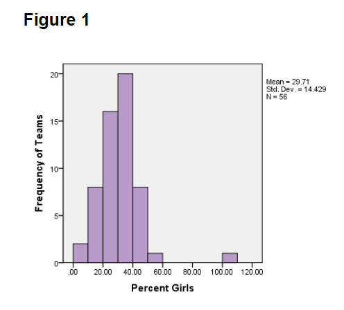
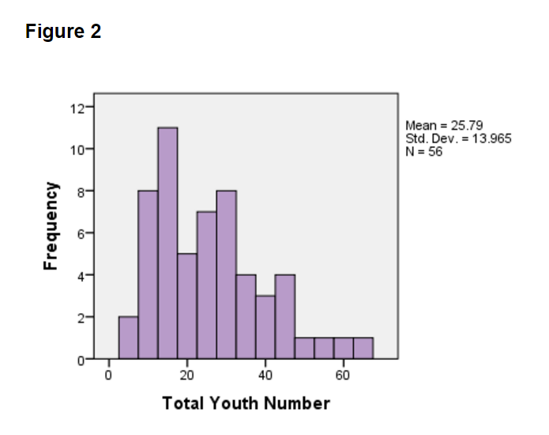
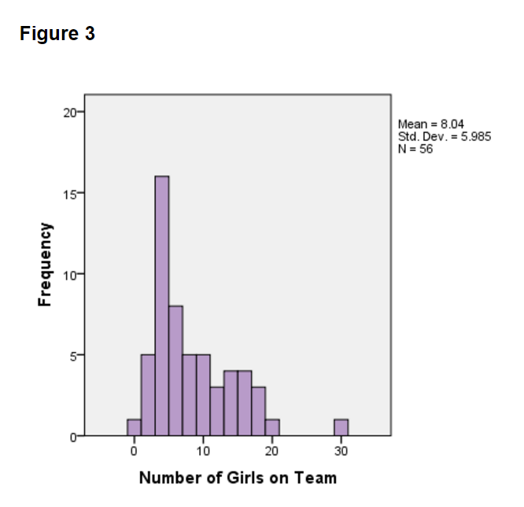
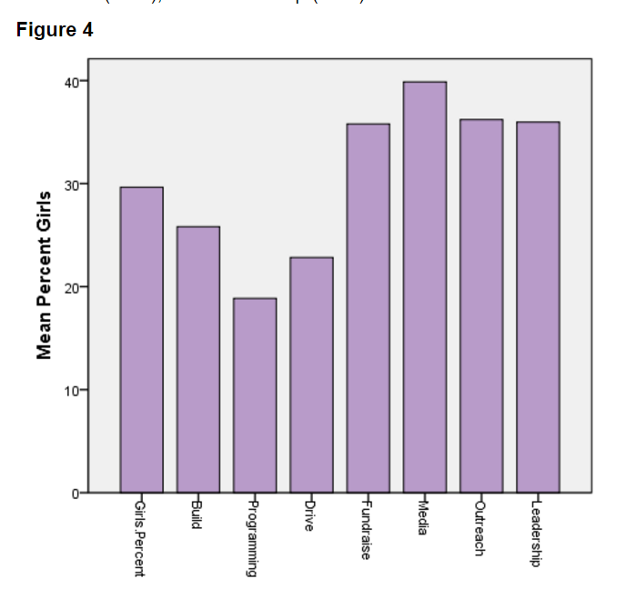
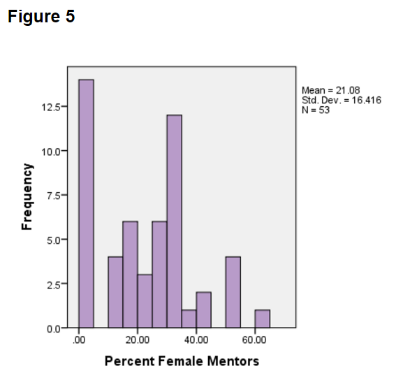
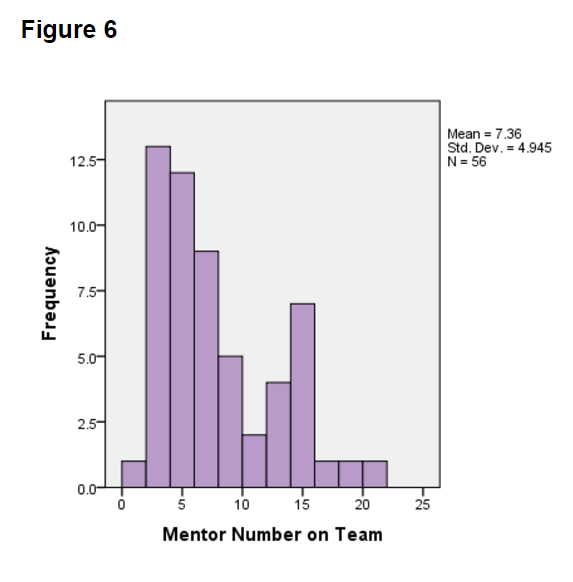
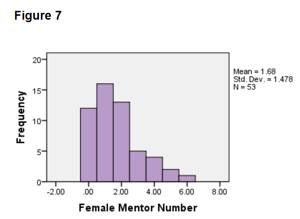
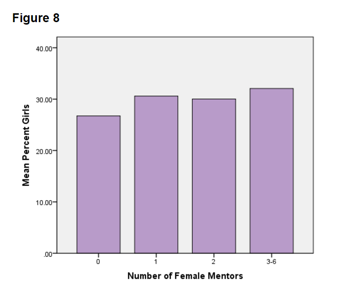
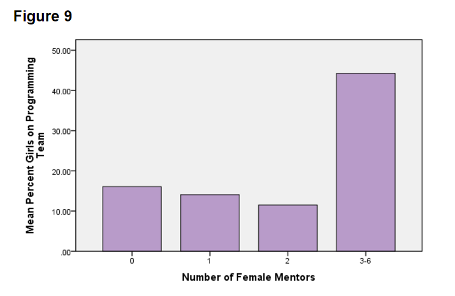
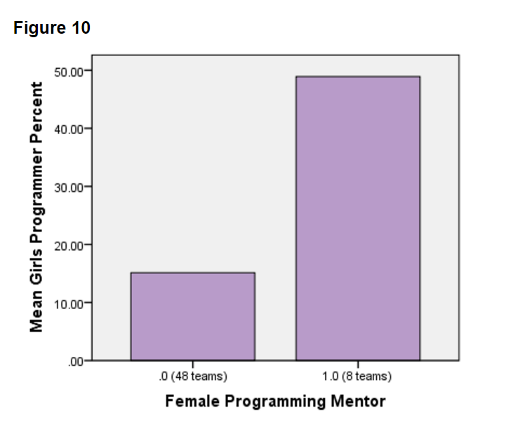

|
|
|
|
|
|
|
|
|

|
Pre-Season |
Auburn Mountain View |
Glacier Peak |
District Championship |
Worlds |
Female Involvement Blogs |
3/24/17 12:47 pm FRC PNW FEMALE INVOLVEMENT
Hi everyone! My name is Addie. I'm an 11th grader, and the Assistant General Manager on the SOTAbots, FRC Team 2557 from Tacoma, WA. In my three years of experience on the SOTAbots, I've noticed that girls are not represented in the FRC program as they are in the general population. As far as I know, there are no statistics to track how many girls participate in FRC, so I created a project to find and report those statistics. I crafted an anonymous survey to measure female member and mentor involvement on teams and in their sub-teams for the 2016 season. In addition, the survey asked for qualitative data on the tools that teams use to recruit and sustain female members. The survey was sent to 158 FRC teams in the Pacific Northwest (Washington, Oregon, and Alaska), and 56 teams responded (over one-third). Here are my findings.
Overall, the PNW FRC community has an average of 30% girl participation on teams (see Figure 1). Of that 30%, there is one all-girls teams represented, one team with 50% girls, and two teams with 0% girls. The rest of the teams reported having less than 50% of girls on their team, which is a huge indicator that the FRC community is lacking in female representation. Figure 2 shows the frequency of team sizes, while Figure 3 shows the frequency of the number of girls that are on those teams. The former shows that the mean team size is 26 members, and the latter shows the mean number of girls on teams as 8 girls. These demographics show that there is work to do in order for the percent of girls on FRC teams to reflect the general demographics.



It's important to note that the percent of female members and mentors on teams were not significantly different when the teams were compared in size. These statistics held true regardless of whether a team was made up of more than 20 members, or less than 20.
The survey also asked for a subteam breakdown to find the representation of girls in different sub-teams. Girls are particularly underrepresented in Build (25%), Programing (20%), and Drive (24%) subteams (see Figure 4). The Drive sub-team is an important statistic because it usually included four team members in the 2016 STRONGHOLD season. The average percent of girls on the Drive subteam was less than one-fourth, which means that on average, there was less than one girl driver per drive team. The survey also found that girls were very underrepresented in the Build and Programming sub-teams, which suggests that even when girls are on FRC teams, they are not well represented in STEM fields (Science, Technology, Engineering, and Math). In comparison, girls are less underrepresented in Fundraising (35%), Media (40%), Outreach (37%), and Leadership (35%) sub-teams.

Let's talk about mentors. The average percent of female mentors on teams is 21%. As seen in Figure 5, there are 14 teams with zero female mentors. While there is one team with 60% female mentors, there are no teams with any more than that 60%. Figure 6 shows that the mean number of total mentors on a team is about 7, while Figure 7 shows that the mean number of female mentors on a team is about 1.7.



The survey results did not show the percent of female mentors to be correlated with the percent of total girls on the team (see Figure 8). On one hand, this could be because there are not enough female mentors on the team to bring in more girls. On the other hand, this could mean that using resources to increase the number and percent of female mentors as a means to bring in more girls may not make an impact.

Let's get into the programming stats a little more. Interestingly, on the programming subteam, the number of female mentors on the team as a whole and in the programming subteam both correlate with a high percentage of girls on the programming subteam. On the general team, Figure 9 shows that having three or more female mentors on the team significantly increases the percent of girls on the programming subteam.

More specifically, teams with a female programming mentor had a significantly higher percent of girls on the programming subteam. As seen in Figure 10, 48 of the teams surveyed did not have a female programming mentor, and those teams had an average of 17% girl programmers on that subteam. However, on the teams that did have a female programming mentor, girls made up 49% girls of the programing subteam. That's almost half! This is where my research suggests a way to recruit more girls into STEM fields: a programming mentor increases the percent of girls on the programming subteam. This is important because often, veteran girls on a subteam like programming could bring in rookie members, but this model is not sustainable if there are none of few girls on that subteam. However, a female programming mentor could jumpstart the culture of having girl programmers, further equalizing the gender demographics in programming subteams.

To find more tools, I evaluated the qualitative data that identified the tools that teams used to recruit and sustain girls (see Table 1). I divided qualitative data separately into 30 teams with 30% girls on the teams or more, and the 36 teams with less that 30% girls on the teams. The teams with a the higher percentile of girls and the lower percentile of girls both reported using word of mouth and outreach to classrooms to recruit more girls. These tools certainly do not hurt, but they are not shown to be impactful techniques in recruiting a higher percent of girls. The tools used more often by teams with a higher percentile of girls include having girl leaders as role-models, attending the Girls Gen competition, and having bonding activities to sustain the girls on their team. These trends suggest that participating in these activities increases the percent of girls on an FRC team. However, it is important to note that these tools come from teams with less than 50% girls on them, so the success rate of these tools is still unclear.
Table 1
|
Word of Mouth Recruitment To Girls |
Outreach to Classrooms to Recruit Girls |
Girl Leaders as Role Models |
Girl's Gen Competition Attendance |
Bonding activities to sustain girls |
No Tactics |
|
|
50%-30% girls |
6 teams |
6 teams |
3 teams |
7 teams |
6 teams |
6 teams |
|
Less than 30% girls |
7 teams |
7 teams |
0 teams |
2 teams |
1 teams |
10 teams |
In conclusion, I believe there is a lot of work that needs to happen to increase female involvement in the FRC community, especially in programming, build, and drive subteams. Also, to have more than 50% girls on a team should become a commonplace phenomenon. Girls are just as competent as everyone else, but there is male dominance in STEM fields that clearly exists right now. Having a female programming mentor on a team could be a solution to get more girls involved in STEM fields through programming. As one of the teams that was surveyed wrote, “If you see [a girl] standing there, put a tool in her hand and show her how to use it. She will not disappoint.” So please, be intentional -- reach out to female programmers who could become a mentor, bring girls into FRC teams, and embrace the idea that someday, your team could be made up of more than 50% girls.
Thank you so much for reading! If you have any questions, feel free to contact me at sotabots@gmail.com.
Powered by SOTAbots students